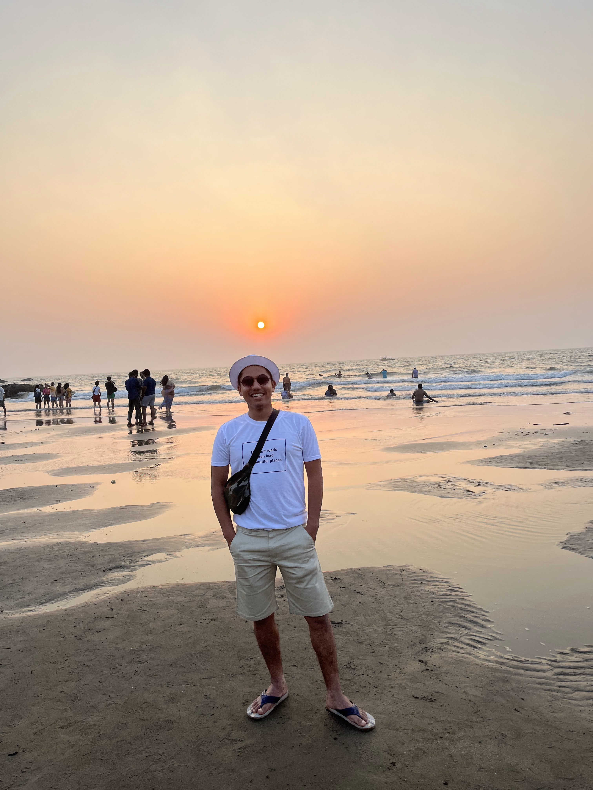

Dipanshu Singh
Summary
Experienced Customer Success Manager skilled in software implementations,
with a proven track record of driving engagement and boosting orders. Background in supply chain management,
technical analysis, and a recent course completion in backend development. Proficient in JS, Node, Express, MySQL, Python, and C++.
Accomplished leader in Toastmasters Club, earning awards and currently serving as Club President.
Holds a Bachelor's degree in Mechanical Engineering with a focus on practical applications and leadership roles.
Education
Bachelor of Technology (B.Tech) in Mechanical Engineering
- St. Andrews Institute of Technology & Management, Gurugram, India
- Aug 2017 – Aug 2021
- Final Grade: 64%
- Key Courses: Thermodynamics, Fluid Mechanics, Materials Science, Machine Design
- Leadership Roles: Coordinator of Speakers Club, Cultural Committee Member
- Participation in Extracurricular Activities: Badminton Club and Cricket Club
Backend Development Course:
- Self-paced learning of JS, Node, Express, MySQL, Python, and C++.
- Completed in 310 days, concluding on 28/2/2023.
Work Experience
-
Customer Success Manager
- Aug 2021 – Present
- 1Systems SaaS Pvt. Ltd., Gurugram, India
- Successfully managed software implementations for 30+ projects, serving clients like Acer, Apple, Godrej, and Reliance.
- Conducted regular business reviews, leading to a 10% quarter-on-quarter increase in orders and reduced churn ratio.
- Spearheaded custom development initiatives, securing 15% of the total project cost quarterly, contributing to consistent revenue inflows.
- Identified opportunities for software performance enhancement, implementing modifications to correct errors and optimize overall performance.
-
Internship for Tendering and Technical Analysis
- Applied Techno Products Pvt. Ltd., Gurugram, India
- Apr 2021 – Jul 2021
- Gained insights into the tendering process, creating quotations for companies like Siemens, KEC, Vikran Engineering Group, Gupta Power, Adani Group.
- Conducted technical analysis on over 100 products, contributing to informed decision-making and product improvement strategies.
- Assisted in document amendments for 10+ projects, ensuring accuracy and compliance with project requirements.
-
Supply Chain Management Internship
- Flipkart India Private Limited, Gurugram, India
- Oct 2020 – Nov 2020
- Gained hands-on experience as a Supply Chain Management Trainee, managing inventory for 20+ products.
- Actively participated in the supply process, facilitating the delivery of over 250 products to more than 100 satisfied customers.
-
Toastmasters Leadership Roles:
-
Sergeant at Arms
- Step Up Dwarka Toastmasters Club, New Delhi, India
- Mar 2022 – Jun 2022
- Facilitated meeting rules, guided participants on decorum, and managed club properties.
-
Club President (First Term)
- Step Up Dwarka Toastmasters Club, New Delhi, India
- Jul 2022 – Dec 2022
- Led club meetings, monitored progress in the Distinguished Club Program, and collaborated with the area director.
- Key decision-maker for club actions, fostering a positive and inclusive club environment.
-
Membership Administrator
- Step Up Dwarka Toastmasters Club, New Delhi, India
- Mar 2023 – Jun 2023
- Developed strategies for membership growth and engagement, led onboarding and training, and represented the club at events.
- Instrumental in achieving awards such as "Rising Star" and "Renewal Superstar" at the division level.
-
Current Club President (Second Term)
- Step Up Dwarka Toastmasters Club, New Delhi, India
- Jul 2023 – Dec 2023
- Overseeing and managing overall club operations, presiding over meetings, and handling various aspects of club operations.
- Key decision-maker contributing to the club's success and advancement.
Skills
- Customer Success Management: Proven track record in managing software implementations and enhancing client engagement.
- Technical Skills: Backend development (JS, Node, Express, MySQL), Python, C++, supply chain management.
- Leadership: Successful tenure as a Toastmasters Club President, demonstrating effective decision-making and organizational skills.
- Communication: Exceptional communication skills honed through public speaking, business reviews, and club leadership roles.
- Project Management: Experience spearheading custom development initiatives, ensuring project success and additional revenue.
- Supply Chain: Hands-on experience in inventory management and facilitating smooth supply processes.